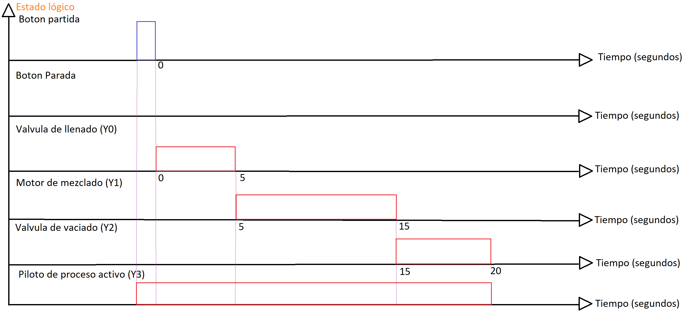

Control Secuencial de Procesos con PLC Delta DVP-SX2 e ISPSoft
Asignatura: Automatización Industrial |
Duración: 90 minutos |
Modalidad: Individual o en parejas
1. Objetivo de Aprendizaje
Desarrollar, compilar y descargar un programa de control secuencial en un PLC Delta DVP-SX2 utilizando el software ISPSoft, verificando el cumplimiento de un diagrama de tiempo mediante la observación de los LEDs de salida, e integrando lógica de seguridad básica.
2. Descripción del Sistema
Se debe programar el control de una estación de procesamiento químico simplificada. El proceso consiste en llenar un tanque, mezclar su contenido y vaciarlo, siguiendo una secuencia temporal estricta. Dado que no se cuenta con actuadores físicos en esta etapa, las salidas del PLC (Y0, Y1, Y2, Y3) se visualizarán mediante sus LEDs indicadores integrados.
Asignación de Entradas y Salidas (I/O Mapping)
Dirección
Tipo
Descripción
Elemento Físico / Simulado
X0
Entrada
Pulsador de Inicio (NO)
Interruptor o botón en el PLC
X1
Entrada
Pulsador de Paro de Emergencia (NC)
Interruptor o botón en el PLC
Y0
Salida
Válvula de Llenado
LED 0 del PLC
Y1
Salida
Motor del Mezclador
LED 1 del PLC
Y2
Salida
Válvula de Vaciado
LED 2 del PLC
Y3
Salida
Piloto de "Proceso Activo"
LED 3 del PLC
3. Especificación del Diagrama de Tiempo
Nota importante: El siguiente diagrama representa el comportamiento esperado del sistema. Debes verificar que tus LEDs sigan exactamente esta secuencia temporal.
Diagrama de Tiempo del Proceso Secuencial

Figura 1: Secuencia temporal del proceso automatizado de llenado, mezclado y vaciado
Secuencia Detallada:
Reposo: Todas las salidas (Y0-Y3) están en OFF.
Inicio: Al presionar y soltar X0, se activa Y3 (Proceso Activo) y simultáneamente se activa Y0 (Llenado).
Temporización 1:Y0 permanece activo por 5 segundos (Temporizador T0).
Transición 1: Al cumplir los 5s, Y0 se desactiva y se activa Y1 (Mezclador).
Temporización 2:Y1 permanece activo por 10 segundos (Temporizador T1).
Transición 2: Al cumplir los 10s, Y1 se desactiva y se activa Y2 (Vaciado).
Temporización 3:Y2 permanece activo por 5 segundos (Temporizador T2).
Fin del Ciclo: Al cumplir los 5s, Y2 y Y3 se desactivan. El sistema vuelve al estado de reposo.
Seguridad: Si en cualquier momento se presiona X1 (Paro de Emergencia), todas las salidas (Y0-Y3) se desactivan inmediatamente y el proceso se reinicia solo si se vuelve a presionar X0.
4. Materiales y Equipos Requeridos
Computador con el software ISPSoft (Delta Electronics) instalado.
PLC Delta DVP-SX2 (o modelo compatible de la serie DVP).
Cable de comunicación USB o RS-232 (según el modelo del PLC).
Fuente de alimentación de 24V DC para el PLC.
5. Pasos de Desarrollo
1Configuración del Proyecto en ISPSoft
Abre ISPSoft y selecciona Archivo > Nuevo.
En "Tipo de dispositivo", busca y selecciona DVP-SX2 (asegúrate de que coincida con la etiqueta de tu PLC).
En "Tipo de lenguaje", selecciona LD (Ladder Diagram).
Asigna un nombre al proyecto (Ej: Practica_Secuencial_Tanque) y haz clic en Aceptar.
2Definición de Variables (Opcional pero recomendado)
Ve a la pestaña Variables o Símbolos.
Define las variables para X0, X1, Y0, Y1, Y2, Y3 con sus respectivos comentarios (Ej: Valvula_Llenado). Esto mejora la legibilidad del código.
3Desarrollo de la Lógica Ladder
Red 1 - Paro de Emergencia y Habilitación:
Usa un contacto normalmente abierto (NO) de X0 en paralelo con un contacto NO de un relé auxiliar (M0) para el enclavamiento.
En serie, coloca un contacto normalmente cerrado (NC) de X1.
La bobina será M0 (Memoria de Marcha).
Red 2 - Piloto de Proceso:
Contacto NO de M0 → Bobina Y3
Red 3 - Llenado (5s):
Contacto NO de M0 AND Contacto NC de T1 → Bobina Y0 AND Bobina de Temporizador T0 K50 (50 x 0.1s = 5s).
Nota: Ajusta la base de tiempo del temporizador según la configuración de tu DVP-SX2 (usualmente T0-T199 son de 100ms).
Red 4 - Mezclado (10s):
Contacto NO de T0 → Bobina Y1 AND Bobina de Temporizador T1 K100 (10s).
Red 5 - Vaciado (5s):
Contacto NO de T1 → Bobina Y2 AND Bobina de Temporizador T2 K50 (5s).
Red 6 - Reset del Ciclo:
Contacto NO de T2 → Instrucción RST M0 (o ZRST Y0 Y3 para mayor robustez), asegurando que el ciclo termine limpiamente.
4Compilación y Verificación
Haz clic en el botón Compilar (o presiona F7).
Revisa la ventana de "Mensaje" en la parte inferior. Si hay errores (círculos rojos), corrige la sintaxis o la lógica.
El mensaje debe indicar "Compilación exitosa".
5Descarga y Prueba Física (Modo RUN)
Conecta el PLC al computador y enciéndelo.
En ISPSoft, ve a Comunicación > Configuración de Comunicación y selecciona el puerto COM o USB correcto. Haz clic en "Prueba de conexión".
Ve a En línea > Descargar a PLC (o Ctrl + D). Confirma la descarga.
Cambia el interruptor físico del PLC a la posición RUN.
Observación: Presiona X0. Observa la secuencia de encendido y apagado de los LEDs 0, 1, 2 y 3 en el frente del PLC.
Verifica con un cronómetro que los tiempos (5s, 10s, 5s) se cumplan.
Prueba la parada de emergencia presionando X1 durante la secuencia y verifica que todo se apague de inmediato.
6. Preguntas de Profundización
El estudiante debe responder estas preguntas por escrito o de forma oral al finalizar la práctica.
Pregunta 1 - Temporizadores
En el programa utilizado, los temporizadores son de tipo TON (On-Delay). ¿Qué sucedería en la secuencia si, por error, se utilizara un temporizador TOF (Off-Delay) en la etapa de mezclado (Y1)?
Pregunta 2 - Seguridad
¿Por qué se recomienda que el pulsador de paro de emergencia (X1) sea físicamente un contacto Normalmente Cerrado (NC) y no Normalmente Abierto (NO), incluso si en el programa Ladder lo programamos como un contacto NC?
Pregunta 3 - Escalabilidad
Si el cliente solicita que, después del vaciado, el sistema espere 10 segundos antes de permitir un nuevo ciclo (para enfriamiento), ¿cómo modificarías el diagrama de tiempo y el programa Ladder para implementarlo?
7. Lista de Autoevaluación
Marca con ✓ antes de llamar al profesor para la evaluación final.
El proyecto en ISPSoft está configurado correctamente para el modelo DVP-SX2.
El programa compila sin errores ni advertencias críticas.
La lógica incluye el enclavamiento (self-holding) para que el proceso continúe al soltar el botón de inicio (X0).
El paro de emergencia (X1) detiene el proceso inmediatamente, sin importar en qué etapa se encuentre.
Los LEDs del PLC (Y0, Y1, Y2, Y3) siguen exactamente la secuencia y los tiempos (5s, 10s, 5s) especificados.
He respondido las preguntas de profundización con mis propias palabras.
El área de trabajo y el equipo están ordenados y limpios al finalizar.
8. Rúbrica de Evaluación del Profesor
Criterio
Descripción
Puntaje Máx.
Puntaje Obtenido
Configuración del Entorno
Selección correcta del PLC (DVP-SX2) y lenguaje (LD) en ISPSoft. Variables bien comentadas.
10
Lógica y Sintaxis
El código Ladder es eficiente, usa correctamente los temporizadores (K valores) y no tiene bobinas dobles o errores de lógica.
25
Funcionamiento Secuencial
Los LEDs del PLC replican exactamente el diagrama de tiempo (5s, 10s, 5s) y el ciclo termina correctamente.
30
Lógica de Seguridad
El paro de emergencia (X1) funciona de manera inmediata y prioritaria, reseteando el ciclo de forma segura.
15
Preguntas de Profundización
Respuestas técnicas correctas que demuestran comprensión de los conceptos (TON/TOF, seguridad NC, escalabilidad).
15
Orden y Seguridad
Manejo adecuado del equipo, conexión segura del PLC y área de trabajo limpia al finalizar.
5
TOTAL
100
Comentarios del Profesor:
Notas para el Docente
Variantes de dificultad:
Nivel básico: Seguir la guía tal como está planteada.
Nivel intermedio: Agregar un sensor de nivel simulado (ej. X2) que detenga el llenado (Y0) antes de los 5 segundos si se activa, obligando al alumno a usar lógica de interrupción de temporizador.
Nivel avanzado: Solicitar que el sistema permita ciclos continuos automáticos hasta que se presione el paro, o implementar un contador de ciclos completados.
Consideraciones técnicas importantes:
Recuerde a los estudiantes que en los PLC Delta, la base de tiempo de los temporizadores T0-T199 es generalmente de 100 ms (0.1s). Por lo tanto, K50 = 5 segundos.
Si usan T200 en adelante, la base de tiempo cambia a 10ms o 1ms, lo cual es un error común que puede usar como momento de aprendizaje.
Verifique que todos los PLCs tengan la misma configuración de comunicación antes de iniciar la práctica.